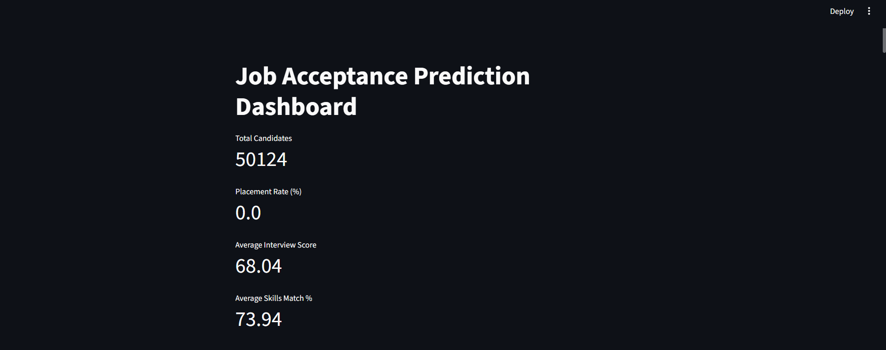
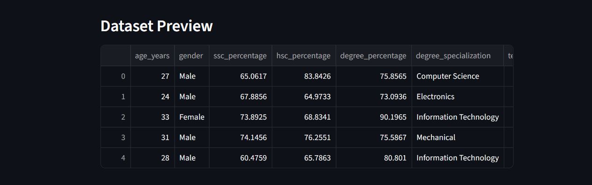
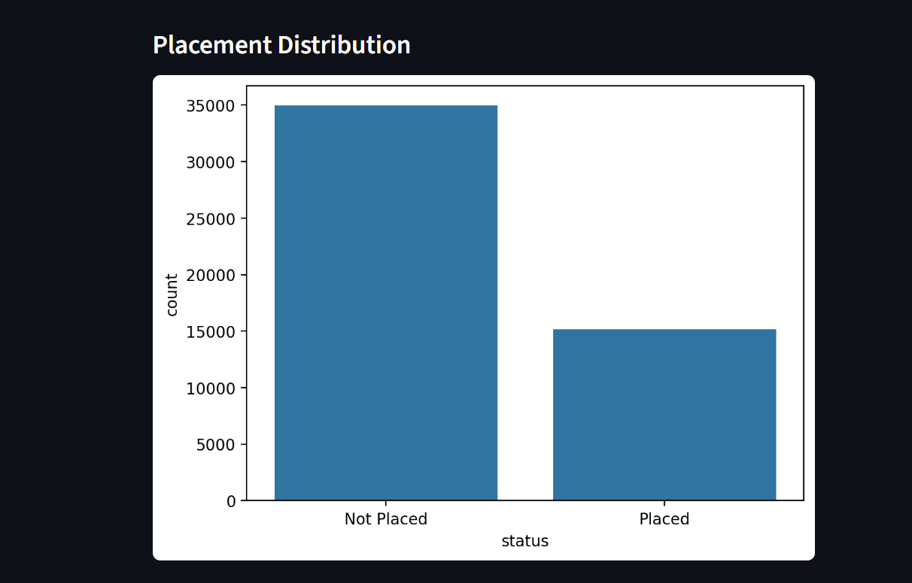
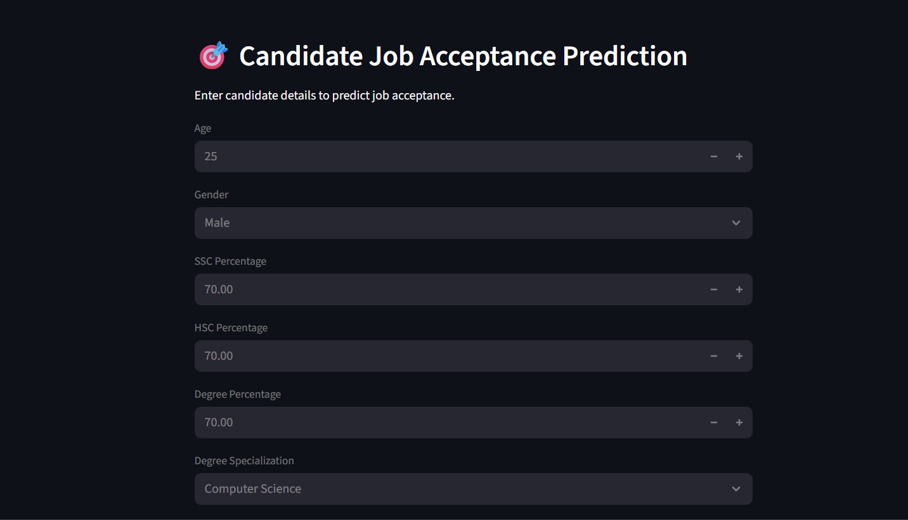

HR ANALYTICS • MACHINE LEARNING
Job Acceptance
Prediction System
A machine learning project that analyzes candidate characteristics and predicts job acceptance using Logistic Regression.
01. Overview
The Job Acceptance Prediction System is an HR Analytics project developed to analyze candidate placement-related information and build a machine learning model for predicting whether a candidate is placed or not placed.
The project combines data understanding, data cleaning, exploratory data analysis, feature engineering, MySQL storage, machine learning and an interactive Streamlit dashboard.
02. Problem Statement
The objective of this project is to use candidate academic, technical, experience and job-related information to predict job placement status.
status
- Placed
- Not Placed
03. Data Understanding
The HR Job Placement dataset was explored to understand its structure, variables, data types, missing values, statistical characteristics and duplicate records.
Dataset Structure
Examined dataset shape and available columns.
Data Types
Identified numerical and categorical variables.
Missing Values
Checked missing values across the dataset.
Duplicates
Checked duplicate records before preprocessing.
04. Data Cleaning
The dataset was prepared for analysis and machine learning through a series of cleaning steps.
- Removed duplicate rows.
- Removed extra spaces from categorical values.
- Standardized categorical values using lowercase formatting.
- Filled missing numerical values using the median.
- Filled missing categorical values using the mode.
These preprocessing steps are implemented in the project's data cleaning script.
05. Exploratory Data Analysis
Exploratory analysis was performed to understand the relationship between candidate attributes and placement status.
Placement Distribution
Examined the distribution of placed and not-placed candidates.
Skills Match
Analyzed skills match percentage against placement status.
Experience
Examined years of experience in relation to placement.
Technical Performance
Analyzed technical performance and placement patterns.
Company Tier
Explored placement patterns across company tiers.
Competition Level
Examined competition level in relation to placement outcomes.
06. Feature Engineering
Additional categorical features were created from existing candidate attributes to make the data more suitable for analysis and modelling.
Experience Category
Fresher, Junior and Senior based on years of experience.
Academic Band
Average, Good and Excellent based on degree percentage.
Skills Match Level
Low, Medium and High based on skills match percentage.
Interview Performance
Poor, Average and Strong based on technical score.
07. MySQL Database
The feature-engineered dataset was stored in MySQL for structured data storage and database-level analysis.
08. Machine Learning
A Logistic Regression model was trained to predict the candidate's placement status.
- Categorical variables were encoded using Label Encoding.
- Data was divided into training and testing sets.
- Numerical features were standardized using StandardScaler.
- Logistic Regression was used for classification.
- The trained model, encoders and scaler were saved using Joblib.
09. Model Evaluation
The model was evaluated using classification metrics generated from the test dataset.
Accuracy
Measures the overall proportion of correct predictions.
Confusion Matrix
Used to examine correct and incorrect classification results.
Classification Report
Provides classification performance metrics for the prediction classes.
Exact evaluation values will be added after verifying the final model run output.
10. Streamlit Dashboard
An interactive Streamlit dashboard was developed to explore the candidate dataset and perform individual job acceptance predictions.
Candidate Analytics
Displays total candidates, placement rate, average interview score and average skills match percentage.
Interactive Prediction
Users can enter candidate details and generate a job acceptance prediction.
Acceptance Probability
The application displays the predicted acceptance probability.
Risk Level
The dashboard displays a corresponding risk level for the prediction.




11. Key Insights
The project provides an analytical framework for understanding how candidate characteristics, skills, academic performance, experience and interview-related factors relate to placement outcomes.
- Candidate attributes can be analyzed together to understand placement patterns.
- Feature engineering converts raw candidate attributes into meaningful analytical categories.
- Machine learning can be used to classify candidate placement status.
- The Streamlit application makes the prediction workflow interactive and user-friendly.
12. Technologies
13. Project Links
Explore the source code and interactive application.